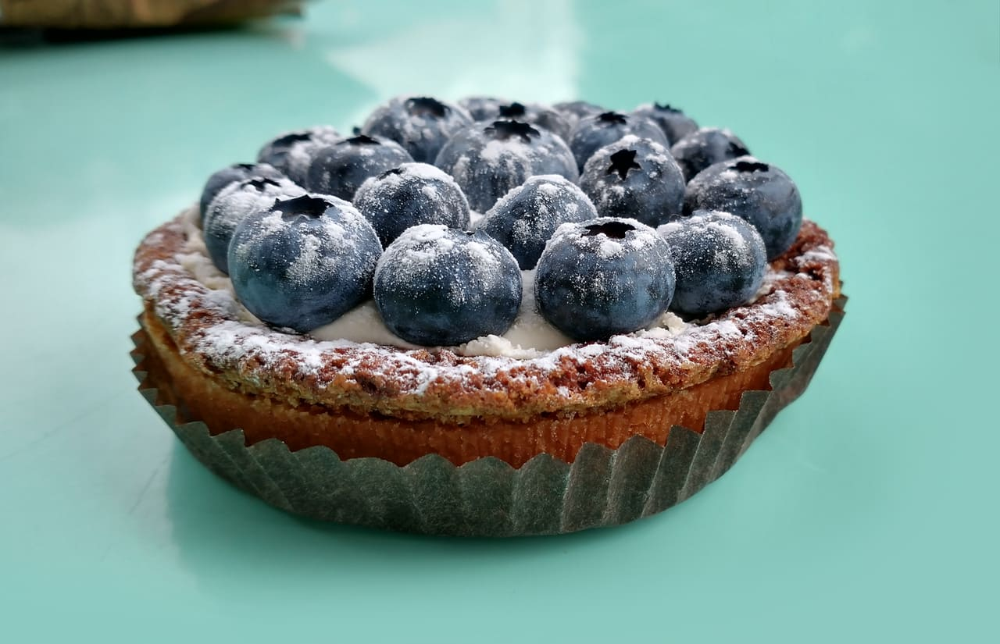

Tarte aux Myrtilles
It should be said, right from the outset, that there is no such thing as the perfect tarte aux myrtilles. Certainly there are great tarte aux myrtilles, and there are run-of-the-mill tarte aux myrtilles, but the act of rating a slice of tarte aux myrtilles on any kind of scale is to miss the point, because a truly great tarte aux myrtilles experience is much more than the culinary artistry employed to combine succulent blueberries with an almond-hinted base; it is also the product of the context in which it is savoured: your mood, the weather, the view, the company you are keeping, the joie de vivre of the server, and perhaps above all, the amount of effort you have expended, on piste, to merit a slice.
Look, if I had one Euro for every time I have heard some holidaymaker on skis moan, that wasn't a red run, that was more like a blue
I would be, well, a slightly richer man. It may have felt like a blue to them this morning with the sun shining and a light dusting of fresh powder filling the grooves left by the Ratrac on its 4am groom, but come back tomorrow when today's slush is frozen into solid lumps, the sky is a whiteout and the Ratrac driver couldn't get up to cover the bare patches due to an excess of local plonk, and it may feel much more like a black.
If rating pistes accurately is difficult due to their environment, then so it is with tartes aux myrtilles, therefore any ratings on this website should be taken with a pinch of salt. Not literally, obviously; the greatest embellishment that should grace a slice of tarte aux myrtilles is a light whipping of Chantilly cream. That said, many are simply great without, and there are also times, at the end of a 15km piste where you have perfectly executed every turn, when a blast of cheapo scooshy cream can elevate an average tart to unforeseen bliss. Think on.
Serre Chevalier
Le Chalet de Serre Blanc, 07.03.22
Just below the Col du Prorel, at the easternmost end of the Serre Chevalier, enveloped by a whiff of thawing piss emanating from a much overused toilet on a spring afternoon, sits the small cabin Le Chalet de Serre Blanc. The day is sunny but cold and clear, and we arrive after having hooned it down the black and red runs to Briançon, an exhilarating drop of 1000m altitude with no options for beginners, and riding the cable car back to the top. Hungry for tarte aux myrtilles, we are struck first by the uninterrupted views to the south over Puy St Vincent and beyond to the Maritime Alps. Despite the fumes, the views very nearly get this tarte aux myrtilles top marks for environment.
The tart itself is served with the option of scooshy cream. The berries, finger-thick, are mildly desiccated and have perhaps spent a day too long in the fridge, although they do have good flavour, while the base, lightly hinted, but not so lightly as to be described as 'subtle', with almond, is a thin pastry. Local beer, bottled, is good.
This tarte aux myrtilles is not going to have you singing The Hills are Alive, but come for the view and the long run home to base.

Puy St. Vincent
Petit Moulin, Les Vigneaux, 17.03.22
An inverted wonder, sweet cream filling hiding an almond sponge and a layer of jam atop a firm pastry base, all topped with fresh blueberries and dusted with sugar. Not your standard arrangement, but then this is not your standard ski station tartelette.
The ski station is pretty good, too, if you like the smaller and friendlier places. Many of the pistes are red and blue runs, with plenty of scope for off-piste in the larch forest in good conditions. The top lifts stop on a ridge with a stunning view to the south, a couple of black runs and what looks like access to some back country. Sadly today is not the day to try that - the powder dusting found on this tart is badly needed on the mountain.